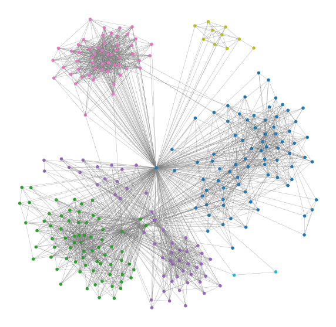

About
Table of contents
Overview
 Complex networks are often the source of high-dimensional data. The goal of this course is to introduce data structural and computational models that are indexed by the irregular support of a graph. The graph represents the network that couples the dynamics of many agents, or it can be a more abstract Bayesian graphical model that explains how observations are conditionally dependent. The interest in these models spans many fields. Engineering is concerned with the design of complex networked infrastructures (the Internet, electric, gas, water, and transportation networks) and in their monitoring and optimal operations. Beyond engineering, network dynamical system models are used in social science, economics, bioinformatics, statistical physics, and machine learning, which can leverage all such models to process the data. The course goal is to introduced formal mathematical models that allow to capture emergent behavior and process the observations that come from these phenomena to predict the trends observed. The course will start from introducing basic concepts in graph theory followed by an introduction to random graphs models. This part will be followed by network dynamical models. Bayesian graphical models will be briefly covered as a more general statistical abstraction of the interactions between multivariate processes. The course will then introduce the students to the emerging field of graph signal processing, a theory that generalizes digital and image processing to graph signals.
Requirements
The main background requirements are linear algebra and knowledge of probability theory and Markov Chains. The assignments will consist of analytical problems and the design of software for numerical simulations and data analysis.
Study Material
The course will rely in part on the following book for models and supplementary reference material (notes, tutorials) provided by the instructor during the course:
- Barrat, Alain, Marc Barthelemy, and Alessandro Vespignani. Dynamical processes on complex networks. Cambridge university press, 2008.
- Notes and tutorials from the instructor.
Evaluation
The course evaluation will be based on quizzes and homework which will include numerical simulations and processing of real and synthetic data.